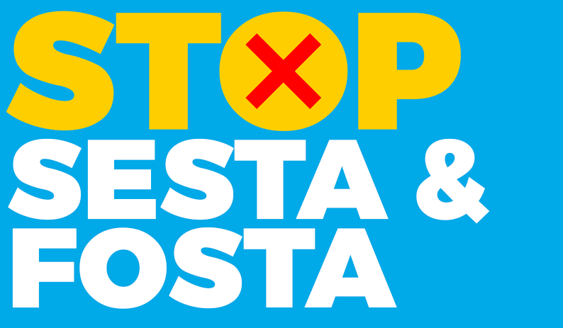
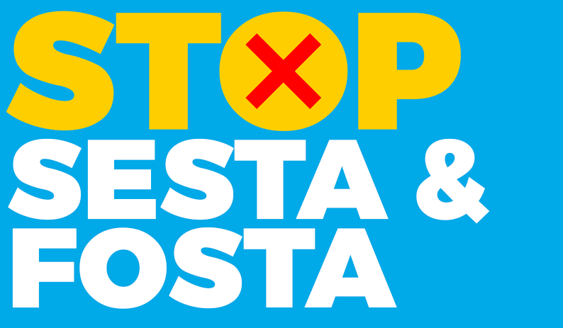

We all rely on online communities to work, socialize, and learn. From the largest social media sites to the smallest message board, online platforms are central to our right to assemble and speak out. SESTA/FOSTA puts ordinary people at risk of being shut out of those spaces.
The authors of SESTA/FOSTA claim that they designed the law to fight sex trafficking, but the law doesn’t punish traffickers. It does threaten legitimate online speech. Since Congress passed SESTA/FOSTA, owners of popular online platforms have responded by censoring completely lawful activity from their sites. Other sites hosting lawful activity have shut down entirely.
Online communities can thrive in large part thanks to a law known as Section 230. Section 230 protects online platforms from liability for some types of speech by their users. Without Section 230, social media would not exist in its current form, and neither would the plethora of nonprofit and community-based online groups that serve as crucial outlets for free expression and knowledge sharing. That’s why Section 230 is the most important law protecting speech online.
Congress significantly undercut Section 230 and the robust online speech it promotes by passing SESTA/FOSTA. As a result, online platforms must face an awful decision: risk severe civil and criminal penalties for the activities of their users or restrict their users’ speech, silencing a lot of marginalized voices in the process.
That’s why the Electronic Frontier Foundation has sued the United States Department of Justice to have SESTA/FOSTA declared unconstitutional.
President Trump signed The Allow States and Victims to Fight Online Sex Trafficking Act (FOSTA) in April 2018. This law combined a previous version of FOSTA with the Senate’s Stop Enabling Sex Traffickers Act (SESTA). Among other things, the new law:
The crushing criminal and civil liability created by the law has incentivized platforms to over-censor their users. When platforms err on the side of censorship, it’s marginalized voices that are hit hardest.
Online platforms are the modern town square. We all benefit from the diversity of voices and perspectives online, and that’s largely thanks to the safe harbor protections in Section 230. Shifting more liability to Internet platforms for their users’ speech will inevitably lead to those platforms more tightly monitoring and restricting users' activities. Again and again, when platforms clamp down on their users’ speech, marginalized voices are the first to disappear.
Cindy Cohn,The integrity of CDA 230 is crucial to preserving community-driven resources like Wikipedia. Wikipedia is a part of everyday life for hundreds of millions of people, answering questions from the meaningful to the mundane. It is written and maintained by hundreds of thousands of volunteer contributors who work together to create reliable, neutral information, all governed by community-created policies. Wikipedia’s success is possible in large part due to CDA 230. CDA 230 enables the Wikimedia Foundation to host this remarkable user-generated resource. The Wikipedia we know today would not exist without CDA 230.
Katherine Maher,Section 230 doesn’t cause lawlessness. Rather, it creates a space in which many things—including lawless behavior—come to light. And it’s in that light that multitudes of organizations and people have taken proactive steps to usher victims to safety and apprehend their abusers.
Alexandra F. Levy,I run a small business that supports a vibrant online community of thousands of people. Knowing we're protected by Section 230 means we can operate like a community, depending on good judgement and thoughtful moderation to maintain a safe and civil social space.
Josh Millard,Without Section 230, intermediaries could wind up taking a ‘better safe than sorry’ approach to hosting their users’ speech. Anything controversial, unpopular, or outside the mainstream could be viewed as a major risk of liability that many intermediaries simply couldn’t afford to take on. An Internet without Section 230 is one that diminishes the voice of the individual online, limits our access to information and diverse platforms for our speech, and pressures all intermediaries to act as gatekeepers and judge user content.
Nuala O’Connor,Activists and dissidents need to be able to communicate freely to educate and organize. The online tools available to us, including third-party platforms that allow us to share speech and content on the Internet, have proved integral to our ability to organize. Section 230 protects those platforms and our ability to use them. We oppose SESTA because it would put those crucial platforms at risk.
Sue Udry,It is continuously frustrating to see legislation focusing on censorship as a means of combating sex trafficking, in hopes that broad restrictions on constitutionally protected speech will somehow trickle down to victims and survivors already in dire need of services and increased access to justice. Strategies such as SESTA have the opposite of their intended effect by eliminating platforms used as tools for intervention by victim advocates and law enforcement, making their important work that much more difficult. Censorship doesn't prevent trafficking.
Siouxsie Q James,Section 230 is integral to protecting our human rights to freedom of expression and anonymity online in the United States and globally. Undermining the protections for platforms based in the United States will damage the free and open nature of the Internet everywhere, and ultimately put peoples' rights at greater risk. This is a case where good intentions don't translate to smart policy.
Amie StepanovichIn Woodhull Freedom Foundation et al. v. United States, a wide variety of plaintiffs are asking the court to declare SESTA/FOSTA unconstitutional: two human rights organizations, a digital library, a sex work activist, and a certified massage therapist.
SESTA/FOSTA violates the First Amendment by punishing certain types of lawful speech—including speech advocating for the decriminalization of sex work. Its broad wording creates a great deal of uncertainty, both for Internet users and for online platforms about what speech or activity creates liability under the law.
The law also violates the Constitution’s prohibition against ex post facto laws—laws that retroactively criminalize activity that was legal at the time that it happened.
 
